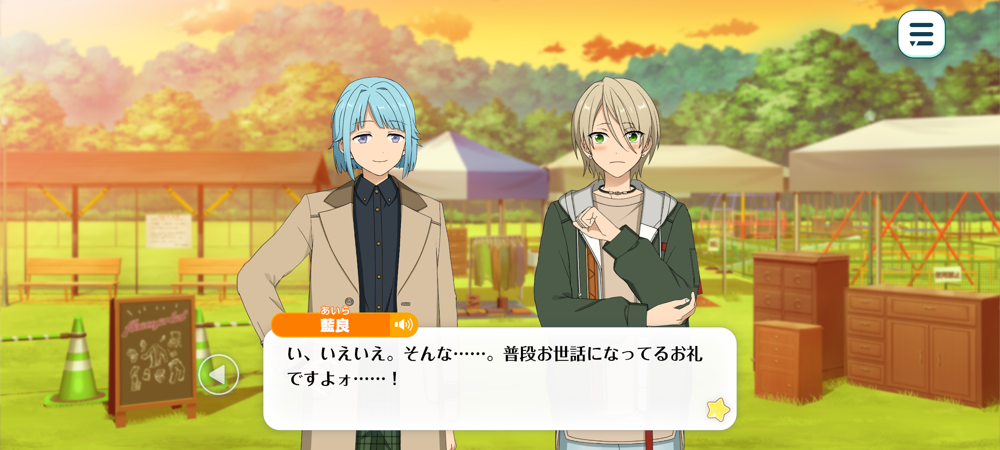
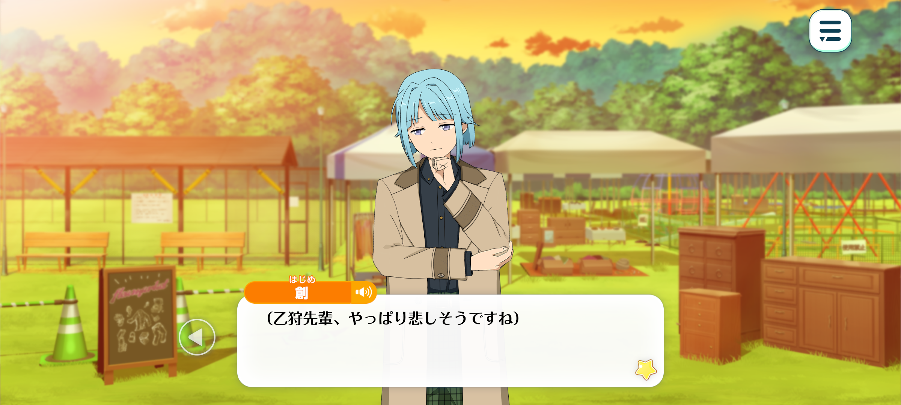
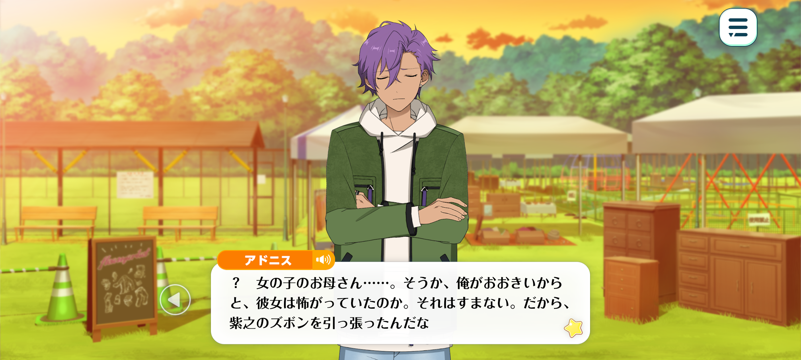
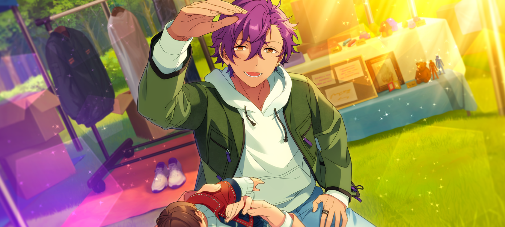
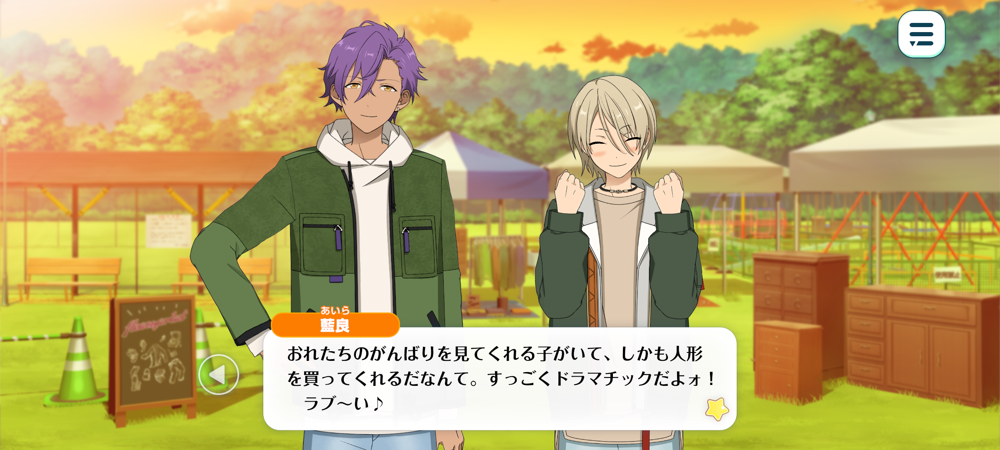

Scout! Dolly Knight
Memories Of A Doll – Chapter 6


Time: Several hours later. Around thirty minutes left before the flea market closes

Hajime: …Thank you for your purchase ♪
Most of the things Mitsuru-kun and I brought have sold. I'm glad people liked them.
And thank you so much for your help, Shiratori-kun. I know it's your day off, so I really appreciate you taking the time to help us.
You put together such a lovely display and did a great job attracting customers. I'm sure it made a big difference to our sales.
Aira: Ah-ah, it was nothing, really…! Thank you for saying that…!
But the sun's almost completely set now. People are starting to pack up their stalls…
The doll never sold, after all. Hngh… I tried all sorts of things, but… Maybe this just wasn't meant to be?
If no one's going to buy him, then I suppose that's that… It's a shame, though, isn't it?
Hajime: I feel the same way. I really wanted to see Otogari-senpai smile.
But there'll be another flea market, so we can try again next time. I'm sure someone will give him a home then.
Mitsuru: Uh-huh~! My shoes got bought by a kid who wears the same size as me. Guess that's just how things go, right?
Adochan-senpai's doll'll find someone to buy him soon, too!
Adonis: …Yes, I suppose so. Though the doll is quite worn, so finding a buyer may not be easy.
You've all helped me work through my feelings. And today, I've been able to see the results of everyone's efforts.
Thank you again.
…

Hajime: (Otogari-senpai really does seem disappointed, after all.)
(I suppose that's just how it is. There's nothing we can do if no one is interested in something that someone else treasures…)
(In the end, it's out of our hands. Still, I wish there were something more I could do.)
…Hyah!? Who's tugging at my trousers?
Oh…? A little girl has come up to the other side of our stall without us noticing.
Is something the matter? Have you lost your mummy?
Aira: …I don't think she has. Looks like her mum's coming over now.
Hajime: Ah… Perhaps she was hiding behind her mother because I spoke to her. It seemed like she wanted to tell us something…

Adonis: What's the matter? If you hide behind your mother like that, I won't be able to talk to you.
? The girl’s mother… …Ah, I see. Because I'm so big, I've frightened her. I'm sorry. That must be why she tugged on Shino's trousers instead.
It's all right. I won't grab you and eat you, so please don't be afraid to talk to me. I'll listen to whatever you have to say.
Hm? So you had a stall nearby. Were you interested when you saw that we were selling a doll?
No? It wasn't the doll itself, but the sight of us desperately trying to sell him that caught your attention? You wanted to know what sort of people we were…?
Now that you mention it, I suppose it must have looked rather strange. A group of grown men desperately trying to sell a doll… We were really hoping to find him a new home.
The day's almost over, and we were thinking of packing up and heading home…
Hm? You think he's such a lovely doll that you'd like to buy him…?
I see. Thank you. Our efforts weren’t for nothing, then.
Alright, then. That'll be 500 yen.
It's fine. I'll give you a discount. After all, the price is only a matter of how much something means to you.
Am I sure 500 yen is enough? I am. Thank you for buying him.
This doll means a great deal to me, so I hope you'll treasure him.
…No. He's yours now. I don't need him any more.
Before you go, could I say one last goodbye to him?
It might seem a little strange for a grown man like me to talk to a doll. But he's been my friend ever since I was little.
There's nothing strange about saying goodbye to a friend, is there?

…Fufu. Thank you for understanding. You're a very clever girl.
Knowing you'll be taking care of him puts my mind at ease.
My dear friend… Thank you for everything. From now on, I want you to stay by her side.
I know she'll treasure you. You'll be in good hands.
…Thank you for spending this time with me. It's time for us to go now, so I suppose this is where we part.
…Farewell.

Aira: Ufufu. He finally found a buyer, Otogari-senpai! ♪
Who would've thought that a little girl would see how hard we'd been trying and decide to buy him? What a heartwarming turn of events! Rabu~i! ♪
Adonis: Truly. It's a miracle that we were able to make this happen together.
It wouldn't have been possible if I hadn't spoken with Shino, or if Tenma and Shiratori hadn't helped us.
And Anzu, who listened to my innermost feelings…
Thank you. I've been blessed with so many wonderful friends.
Perhaps the memories I shared with the doll have taught me that.
…Now, then. Shall we start packing up?
If there's any heavy lifting to be done, leave it to me. I'm no longer the weak little boy I once was.
I hope you'll all accept this as a small token of my gratitude for everything you've done for me.
Hajime: Fufu. In that case, could you carry the stall for us? It's rather heavy, but I'm sure it'll be easy for you.
Everyone's worked so hard to make today's flea market a fun one. Let's keep doing our best right up until the very end! ♪
…Oh, that's right! Before we head back, would you all like to stop by a family restaurant?
We've all worked hard today, so I thought it'd be nice to treat ourselves. I don't go very often, but it can be a little reward for us.
Mitsuru: Ahh, sounds great! Ai-chan, you're coming too~! ♪
Aira: T-thank you very much! If you'll have me, I'll go anywhere, any time!
Ahaha. So many unexpected things happened today… Maybe that's what I get for leaving the house without making any plans!
Well, all's well that ends well, right? ♪